Reactor is positioning real-time, interactive video generation as a distinct product category from batch generators like Veo or Sora, with its own infra requirements (streaming, persistent session memory, sub-100ms global routing)
Ahres's case runs from a slot-machine complaint through a GPS analogy to two payoffs (creative control, live ads), but the mechanisms underneath still lack a working evaluation standard, so the strength of the argument is unproven (ours).
“Then GPS came. GPS made it real time.”
said at 03:04“It's a slot machine. You cannot change it. You cannot do anything about it”
said at 01:01“The first one is these are Vio, think about Vio or Sora, but real-time and interactive”
said at 04:36“real-time actually ends the slot machine type of mentality and actually gives you the the control that you need”
said at 06:09“Why can't I produce an ad in real-time in front of you”
said at 06:40“one of the things that live live real-time models struggle with is memory”
said at 12:22“it needs to be sub-100 millisecond latency anywhere you are”
said at 12:52“evaluation for these real-time models is an unsolved problem”
said at 16:27The GPS/Uber and film/Instagram analogies are doing a lot of argumentative work here and are worth treating as rhetorical framing rather than established fact (ours), the claim that real-time necessarily creates new categories of application, rather than just faster versions of existing ones, is plausible but unproven for video specifically, and Ahres himself concedes evals don't exist yet to measure whether the real-time output is actually good.
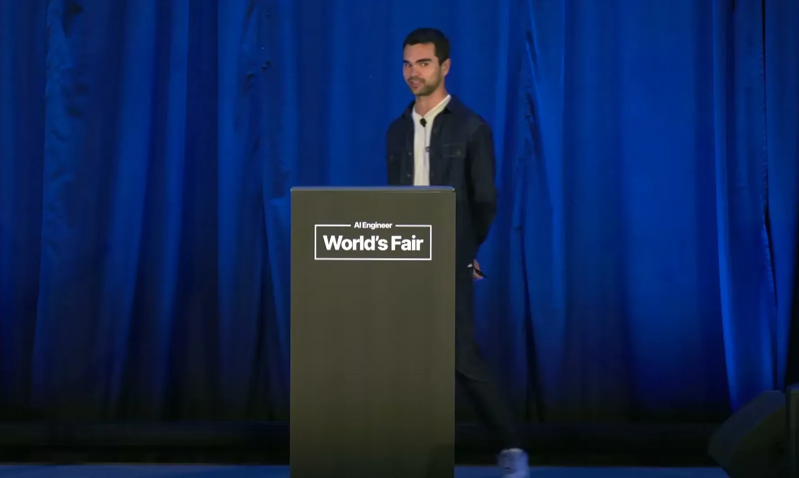
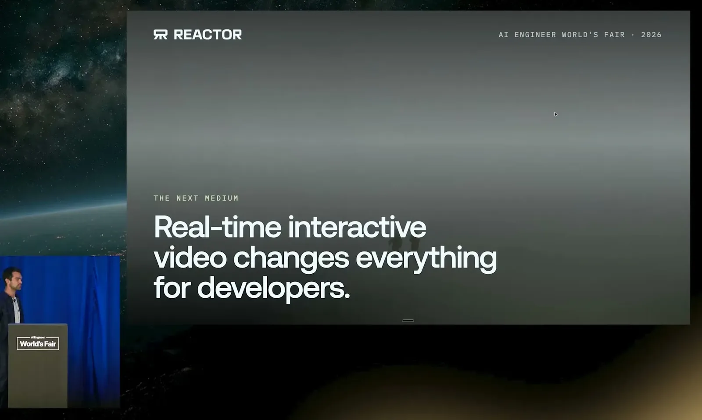
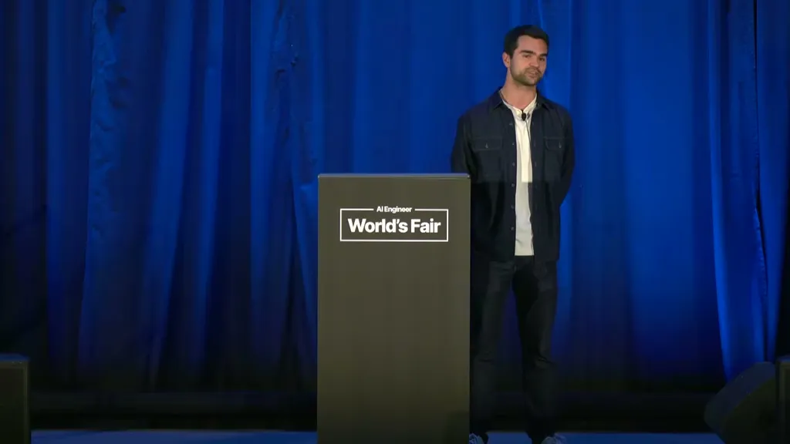
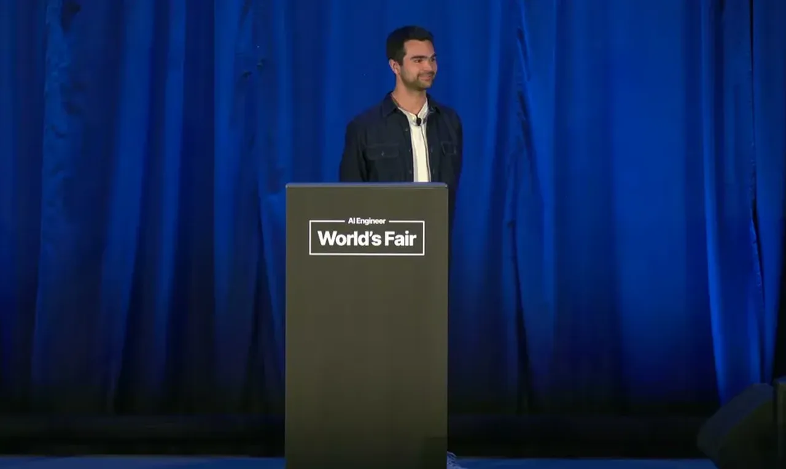
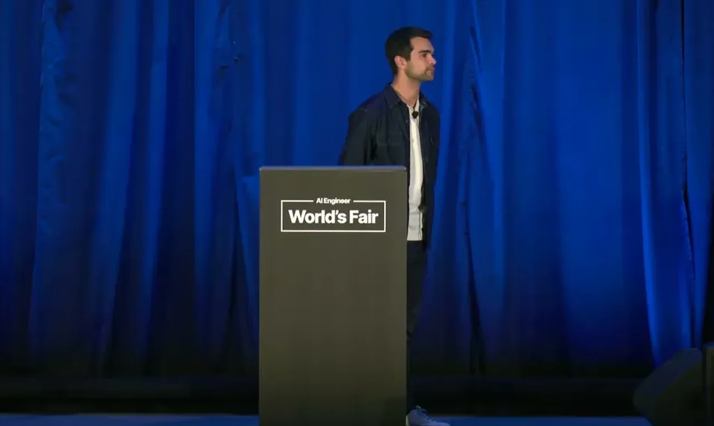
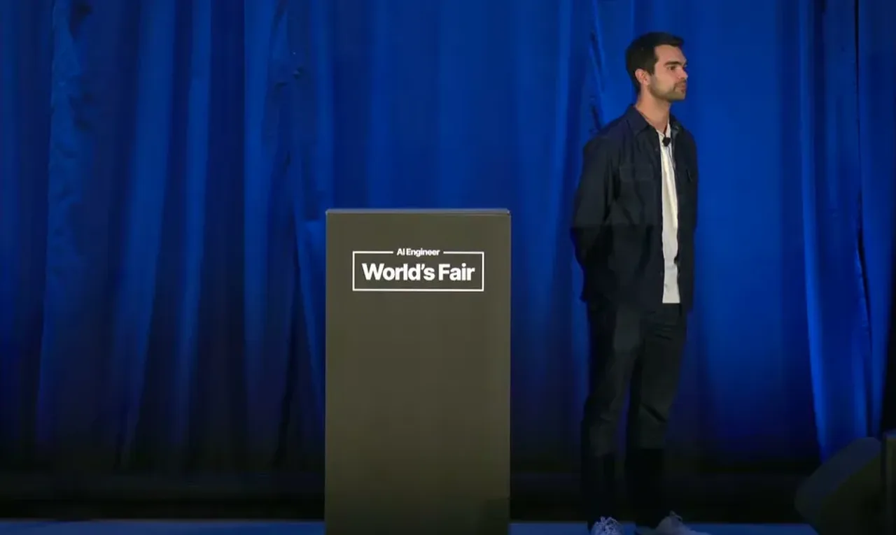
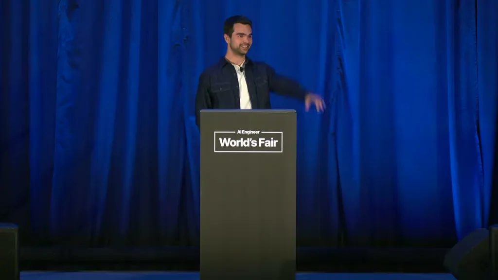
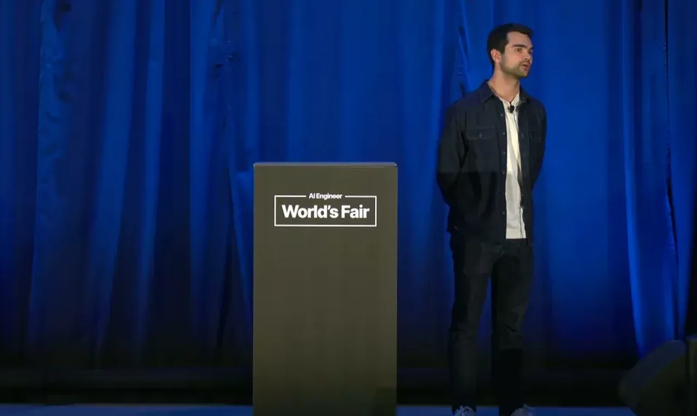
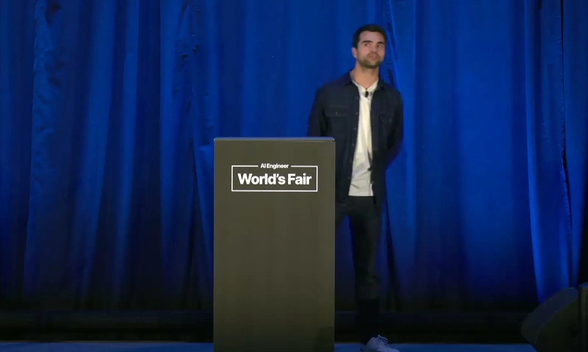
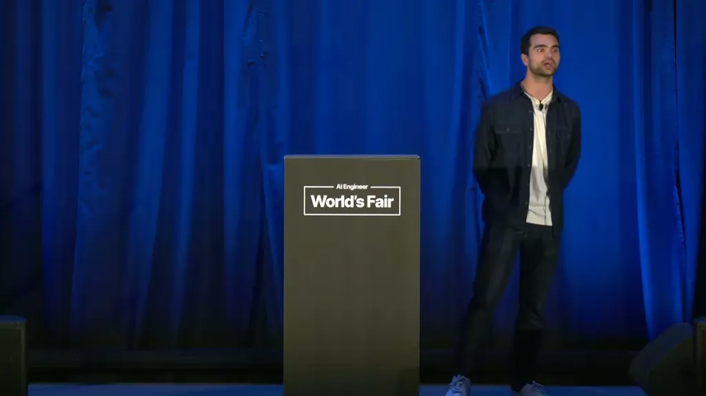
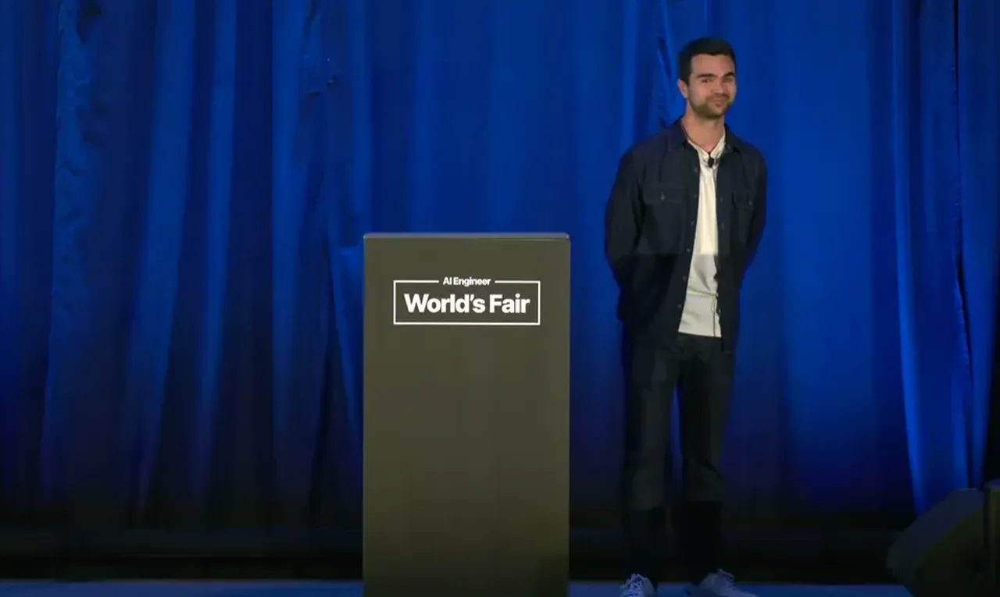
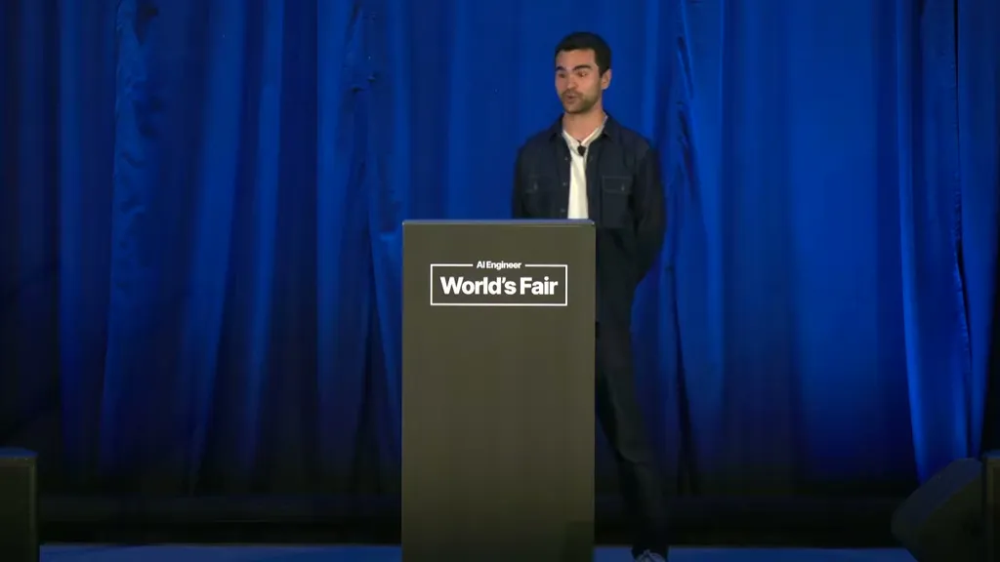
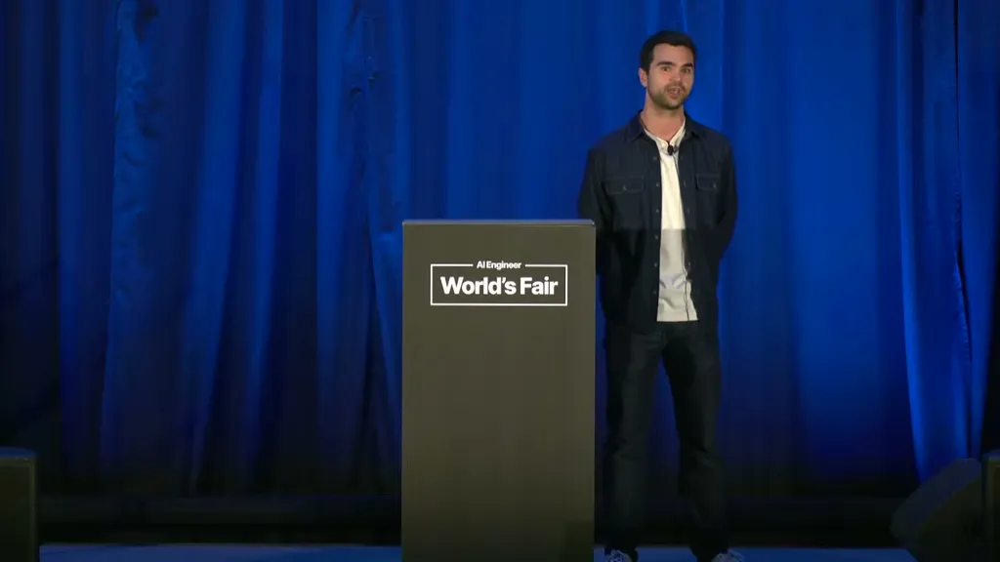
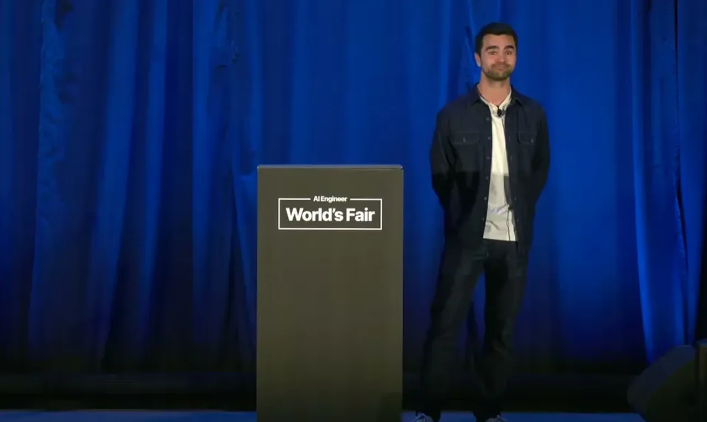
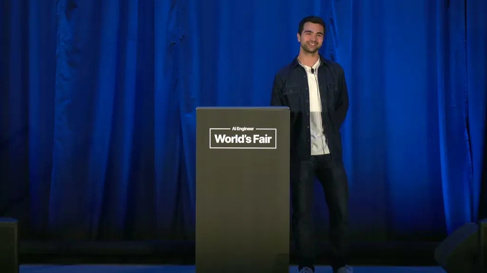
| Stance | Claim | t |
|---|---|---|
| asserts | Ahres uses GPS's shift from static maps to live tracking as the historical model for what real-time will do to video: it doesn't just speed things up, it enables entirely new applications like Uber. | 03:04 |
| warns | Current video models (Veo, Kling) return a finished file that can't be altered after generation, which Ahres calls a slot-machine dynamic. | 01:01 |
| asserts | Ahres argues Instagram and TikTok exist because creators could see what they were shooting in real time (digital vs. film), and draws the parallel to video generation. | 03:35 |
| asserts | Real-time generation is framed as ending the 'slot machine' dynamic and giving creators the control that batch generation lacks. | 06:09 |
| predicts | Ahres predicts real-time video will enable ads inserted live based on what a viewer has been looking at, replacing pre-produced ad creative, though brand caution will slow adoption. | 06:40 |
| warns | Live real-time models still struggle to keep memory of what happened, e.g. a character that turns and looks back may not remember the scene behind it. | 12:22 |
| asserts | Real-time applications need sub-100 millisecond latency everywhere, which requires routing users to geographically nearby GPUs rather than a single data center. | 12:52 |
| asserts | The first category of real-time model is described as an infinite, interactive, real-time version of Vio/Sora-style generation. | 04:36 |
| warns | Evaluation for real-time video consistency is an unsolved problem across the research community, including at DeepMind; current practice is human visual judgment. | 16:27 |
Machine-readable copy embedded in this page (script#ontology) and in the corpus ontology.